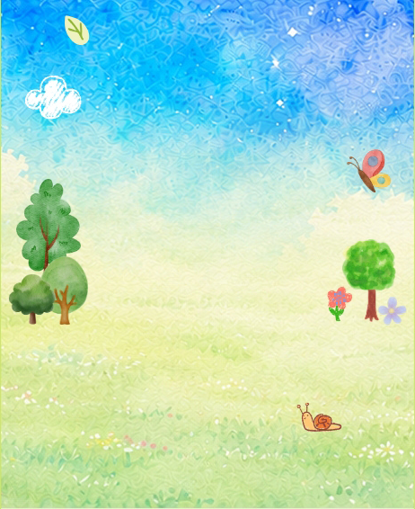

내가 심은 나무
2026년 8월 15일에 심었어요
이미지를 찾을 수 없어요.
이 HTML을 WebExport 폴더 안에 두고 열어주세요.
(assets/plants/ 와 같은 위치)
이 HTML을 WebExport 폴더 안에 두고 열어주세요.
(assets/plants/ 와 같은 위치)
새싹
木
·
No.0142
이만큼 자랐어요
심은 날부터 시간이 흐를수록 자랍니다
숲은 이렇게 채워지고 있어요
관람객들의 소원이 모여 만든 숲
화면을 캡처해 공유해 주세요
같은 QR을 다시 찍으면 그동안 자란 모습을 볼 수 있어요.
미리보기 설정 (개발용)
0 / 45
배율 = 단계별 표시 높이. Unity WishForestRuntime.stageScale 과 동일한 값이 기본.
이미지 파일: assets/plants/{변종}_s{1~4}.webp